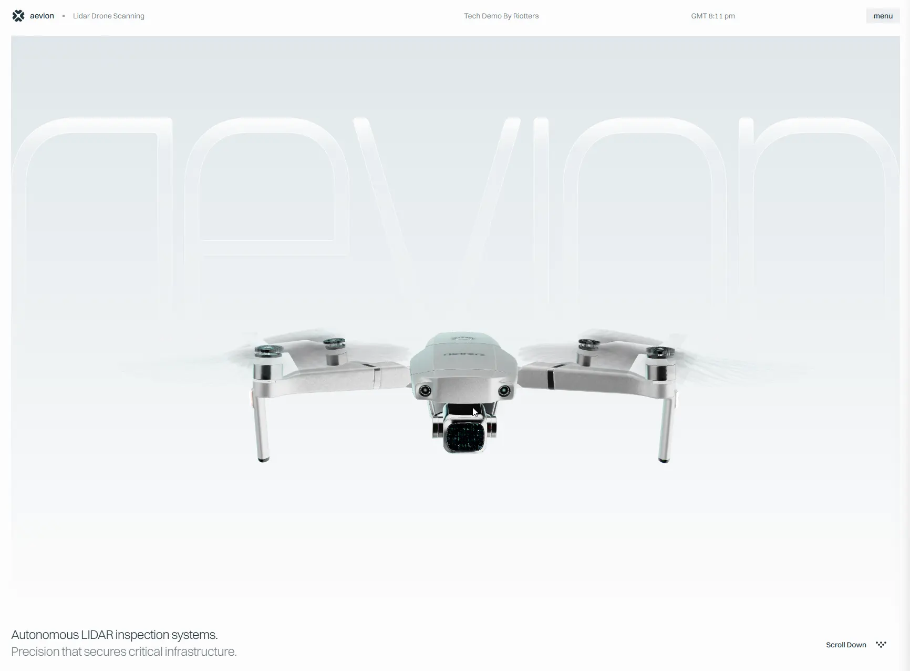

Сайт 010 · Промо-сайт · Эксперименты и спецпроекты
Aevion
13 место в чемпионате · 77.4 / 100
Screens/010.webp, доминирующий цвет занимает 96% кадра.Что это
Одностраничный сайт вымышленного автономного LiDAR-дрона для инспекции инфраструктуры, сделанный студией Riotters как демонстрация технологий. Next.js с React 19 и Tailwind 4 на Vercel: фотореалистичная модель дрона грузится из GLB через three.js и react-three-fiber, а одна запечённая анимация на 1038 кадров проигрывается по прогрессу скролла. Пункты меню — это якоря со смещениями, которые прокручивает Lenis: позиция скролла задаёт кадр, переключает запечённые в модель камеры и углы рыскания.
Описание владельца коллекции: Эффектный демосайт вымышленного автономного дрона. Главная фишка — псевдоинтерактивные 3D-анимации с привязкой к пунктам меню. Сайт создан студией Riotters в экспериментальных творческих целях.
Чем интересен
- Весь 3D-нарратив — одна запечённая анимация на 1038 кадров при 30 fps, нарезанная по секциям; камеры для разделов тоже запечены в модель отдельными узлами, то есть режиссура сделана в Blender, а не в коде.
- Смаз винтов сделан не постэффектом, а инстансингом: на каждый пропеллер накладывается пятнадцать клонов-призраков, распределённых по дуге выдержки 1/24 секунды — именно это даёт размытые винты на скриншоте.
- Связь меню с 3D непрямая: пункты Gear, Solutions, Capabilities, Software и Contact — это якоря со своими смещениями, Lenis прокручивает страницу, а прогресс скролла в секции высотой 390vh выбирает кадр и угол рыскания.
- Псевдоинтерактивность интро устроена как подмена источника у одного скрытого видео: слова «cracks», «deformations» и «structural risks» несут разные mp4-файлы, а элемент видео один.
- Инженерная аккуратность для демо: отдельный счётчик кадров, восстановление после потери WebGL-контекста до трёх раз, раздельные коэффициенты сглаживания для десктопа и мобильного, мобильные переопределения почти для каждой константы.
- В подвале перечислен Payload CMS, но /api и /admin отдают 404, страница полностью пререндерена и обращений к CMS нет — список технологий выглядит декларацией, а не описанием рантайма.
- На странице нет ни одного h1 — только четыре подзаголовка второго уровня, а гигантский логотип AEVION в первом экране отрисован как SVG с сильным размытием.
Все 30 номинаций сайта
Итог: 77.4 / 100 по профилю «Промо, культура, иммерсив». Первых мест в критериях: 3 (единолично 0, разделено 3), призовых мест: 4. Строки отсортированы по месту в номинации, ссылка ведёт к номинации в чемпионате.
- Интерактивные элементы
- Соответствие бренду и ЦА
- Целостность
- Попадание в номинацию
- Эстетика и оригинальность
- Уникальность предложения
- Удобство интерфейса
- Современные технологии
- Инновационность в дизайне
- Мультимедийность
- Стабильность
- Креативность в решении задач
- Уникальность и экспертность
- Грамотность
- Социальная ответственность
- Доступность (a11y)
- Адаптивность
- Безопасность
- SEO-оптимизация
- Интуитивность навигации
- Экспертность
- Читабельность
- Полнота реализации
- Отзывы и рейтинги
- Работа форм и поиска
- Релевантность и полнота
- Прозрачность
- Соответствие заявленному
- Интеграции
- Актуальность
Обоснования по разделам
- Юзабилити и UX
- Меню из пяти пунктов с выверенными смещениями ведёт по секциям, предзагрузчик показывает прогресс, служебные подписи читаются как приборная панель; но панель меню рендерится на клиенте, а страница прокручивается нестандартно.
- Дизайн и визуальное восприятие
- Светлый инженерный минимализм: почти белое поле, единственный тёмный тон, холодный градиент и крупная тонкая типографика с сильным отрицательным трекингом.
- Контент
- Разделы про конструкцию, решения, возможности и софт вымышленного дрона с конкретными цифрами; страницы команды и кредитов нет, продукт вымышленный и это честно заявлено.
- Техническое качество
- HTTPS, Vercel, sitemap из одного адреса, robots и og-теги на месте; микроразметки нет, а в подвале заявлена CMS, которой на сайте нет.
- Функциональность и интерактивность
- Форм, поиска и обратной связи нет вовсе; интерактив — это скролл-управляемая 3D-сцена, частицы и метки на модели.
- Доверие и репутация
- Есть дисклеймер о товарных знаках DJI и ссылка на студию, но нет ни политики конфиденциальности, ни импрессума, ни контактов на самой странице.
- Инновации и технологичность
- Редкая инженерная аккуратность: запечённые камеры в модели, смаз винтов инстансингом, восстановление после потери WebGL-контекста и отдельные настройки для мобильных.
- Соответствие категории и целям
- Для демонстрации технологий студии сайт работает идеально: он показывает уровень 3D-режиссуры, но не является продуктовым сайтом с покупкой или заявкой.
Что не проверено
- Точная версия three.js не установлена: сеть этого домена отдаёт JS с жёстким троттлингом, регион файла с номером ревизии скачать не удалось. Версии react-three-fiber (9.5.0) и Rive (2.38.5) прочитаны литерально.
- Проанализировано около 40% основного JS-чанка — выводы о 3D опираются на доступные фрагменты, конфиг-таблицу, метаданные GLB и серверную разметку.
- Использование Payload CMS не подтверждено: он заявлен только в подвале, а /api и /admin отдают 404.
- Рендер 3D-сцены в браузере не проверялся: браузер сознательно не запускался, чтобы не нагружать машину при троттлинге сети.
- Внешний вид открытого меню не зафиксирован: панель рендерится на клиенте, в серверной разметке её контейнер пуст.
- Содержимое трёх видео интро не просматривалось: подтверждены только размеры и доступность файлов.
- Скриншот 010.webp — единственный визуальный источник, собственные кадры не снимались.
- Кто именно в студии вёл проект и когда он вышел, не установлено: есть только дата обновления в sitemap (19.08.2026) и копирайт 2026 года.
Паспорт
- Домен
- drone.riotters.com
- Тип сайта
- Промо-сайт
- Категории
- Эксперименты и спецпроекты
- Подкатегории
- Промо, WebGL и 3D, Интерактив
- Для кого
- Дизайнерам, Разработчикам, Маркетологам
- Стиль
- Утилитарный техно, Минимализм, Иммерсивный 3D
- Приёмы
- WebGL и 3D, Скроллителлинг, Липкие секции, Прелоадер, Микроанимации
- Технологии
- Next.js (App Router) с Turbopack, React 19, three.js, @react-three/fiber 9.5.0, @react-three/drei, postprocessing (pmndrs), Motion (framer-motion), Lenis, Rive (@rive-app/webgl2 2.38.5), GLTFLoader с Draco, KTX2 и meshopt, Tailwind CSS v4, Vercel, Blender (экспорт моделей), Шрифты Switzer Variable и Proto Mono Light
- Язык
- Английский
- Страна
- Польша — по студии-автору (Riotters sp. z o.o., Щецин); на самом сайте страны и адреса нет
- Автор
- студия Riotters — Riotters sp. z o.o., Щецин, Польша
- Год
- 2026
- Добавлен
- 2026-09-30
Палитра
- #F1F4F5 — 96% кадра
- #CDD0D0 — 2% кадра
- #AEB2B2 — 1% кадра
- #909292 — 1% кадра
- #090D0E — 0% кадра
измерено из Screens/010.webp (светлый фон занимает 96% кадра); токены сайта: #FDFDFD, тёмный #24363F, холодный градиент #DDE5E9, сталь #486C7F
- Режим
- Светлая
- Цвет фона
- Нейтральный
Чемпионат
13 место из 31 · 77.4 / 100 · первых мест 3 из 30 · сильнее всего: Интерактивные элементы (1 место)
- Соответствие бренду и ЦА — 1 место, 9 баллов
- Целостность — 1 место, 9 баллов
- Интерактивные элементы — 1 место, 10 баллов
Технические факты
- HTTPS
- да
- Meta viewport
- да
- Title
- Aevion — autonomous LiDAR inspection drone (42 симв.)
- Description
- Interactive 3D demo of Aevion: full-hemisphere LiDAR capture at 240,000 points per second, folding to 42 cm. A technology demo by Riotters. (139 симв.)
- Open Graph
- да
- Структурированные данные
- нет
- Sitemap
- https://drone.riotters.com/sitemap.xml — один адрес, lastmod 19.08.2026
- Robots
- есть: Allow: /, указаны Host и Sitemap
- Аналитика
- Vercel Web Analytics, Vercel Speed Insights
- Проверено ссылок
- 23
- Битые ссылки
- нет
- Контакты
- контактов на странице нет: в подвале ссылка «Tech Demo by Riotters» и кнопка «Contact Us» ведут на сайт студии; контакт студии — contact@riotters.com
- Юридическая информация
- © Riotters 2026 и дисклеймер о товарных знаках DJI с оговоркой, что это некоммерческая демонстрация, не связанная с DJI; политики конфиденциальности и импрессума на сайте нет
Технологии с доказательствами
- Next.js (App Router) с Turbopack — чанки /_next/static/chunks/*, RSC-пейлоад self.__next_f.push, заголовок X-Nextjs-Prerender: 1, чанки turbopack-*.js
- React 19 — flight-данные RSC, ссылки на $Sreact.fragment, серверные ссылки-модули
- three.js — GLTFLoader, PerspectiveCamera, OrthographicCamera, WebGLRenderer, InstancedMesh, ShaderMaterial, ColorManagement; three.js заявлен и в og:description
- @react-three/fiber 9.5.0 — литерально в чанке: rendererPackageName: "@react-three/fiber", rendererVersion: "9.5.0"
- @react-three/drei — хук useEnvironment с характерными строками ошибок, useGLTF, useThree
- postprocessing (pmndrs) — классы LuminanceMaterial и EffectMaterial с defines THREE_REVISION
- Motion (framer-motion) — классы VisualElement, MotionValue, KeyframeResolver, interpolate с опциями clamp и ease
- Lenis — классы lenis/lenis-smooth, экспорты ReactLenis и useLenis, вызов scrollTo с флагами immediate и force
- Rive (@rive-app/webgl2 2.38.5) — дескриптор пакета в чанке, ленивая загрузка отдельного чанка; Rive рисует в четыре canvas в разметке
- GLTFLoader с Draco, KTX2 и meshopt — код загрузчика с KHR_DRACO_MESH_COMPRESSION, KHR_MESH_QUANTIZATION, ktx2Loader, meshoptDecoder
- Tailwind CSS v4 — слои @layer properties и @property --tw-*, токен --color-ink: #24363f
- Vercel — заголовки Server: Vercel, X-Vercel-Cache: HIT, ссылки с параметром dpl
- Blender (экспорт моделей) — в заголовке GLB: "generator":"Khronos glTF Blender I/O v5.2.39"
- Шрифты Switzer Variable и Proto Mono Light — @font-face со self-hosted woff2 и preload; для обоих сгенерированы fallback-метрики с size-adjust
Что смотреть в первую очередь
Смотреть как пример режиссуры в 3D: вся анимация вместе с камерами запечена в одну модель, а скролл лишь выбирает кадр. Отдельно интересен приём со смазом винтов инстансингом вместо постобработки.
Похожие в коллекции
- Utopia Tokyo — общее: Эксперименты и спецпроекты, Иммерсивный 3D, Прелоадер, WebGL и 3D, Микроанимации
- Sutéra — общее: Утилитарный техно, Минимализм, WebGL и 3D, Скроллителлинг, Прелоадер
- Leo Parpeix — общее: Иммерсивный 3D, Минимализм, WebGL и 3D, Скроллителлинг, Прелоадер
- Prand — общее: Прелоадер, Скроллителлинг, Липкие секции, WebGL и 3D, Микроанимации